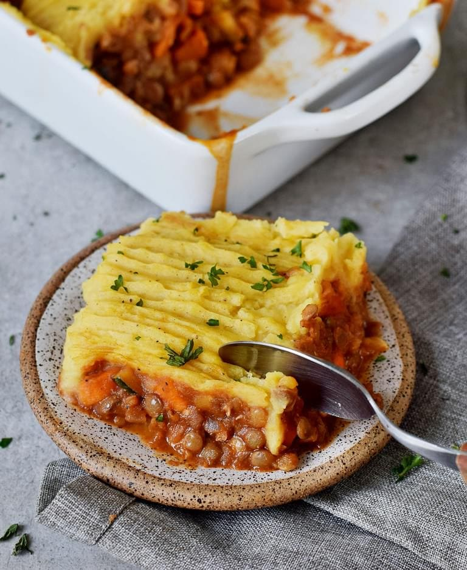

Lasagna

Cooking Shepherds Pie
An all time favourite of mine, I've been perfecting this recipe for many years
It is a vegan spin on a classic but maybe it should be called farmers pie? Not sure but there's not lamb here!
Ingredients
- Potatoes
- Celery
- Carrot
- Onion
- Mushrooms
- Lentils
- Chocolate
- Stock
Method
- First chop up all the vegetables
- Fry the onion, celery and carrot in some oil
- Add in the stock
- Add in the mushrooms and the Lentils
- Cook for 20 minutes
- Meanwhile boil the potatoes
- Add in the chocolate to the mince mix
- Put the mince mix into a casserole dish and add the mash potatoe on top
- Cook in the oven for 30 minutes